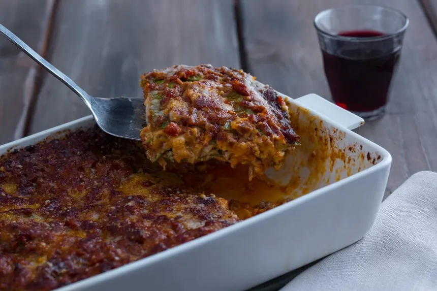

Lasagna
Home

Lasagna Bolognese is a classic Italian dish that features layers of pasta, ragu , and bechamel sauce. Here is a detailed recipe for making it at home:
Ingredients
Instructions
-
Roll out the pasta dough to a thickness of just over 0.5mm (0.2in) and cut into large rectangles.
-
Boil each pasta sheet for 30-40 seconds, drain, and place on a tray with a clean dry cloth.
-
Assemble the lasagna in a greased baking dish by layering béchamel,
ragù, and pasta sheets. Add grated Parmesan cheese between layers.
-
Finish off with a layer of béchamel and a genorous sprinkle of Parmigiano Reggiano.
-
Bake in a pre-heated oven at 180°C (350°F) for 30-40 minutes or until golden brown.